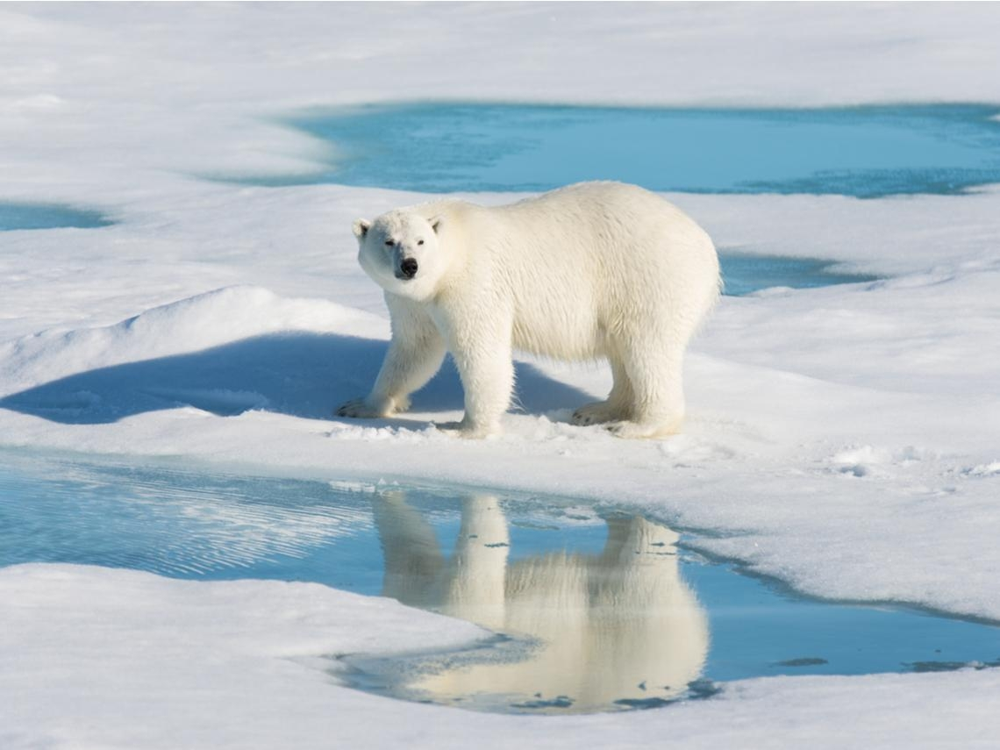
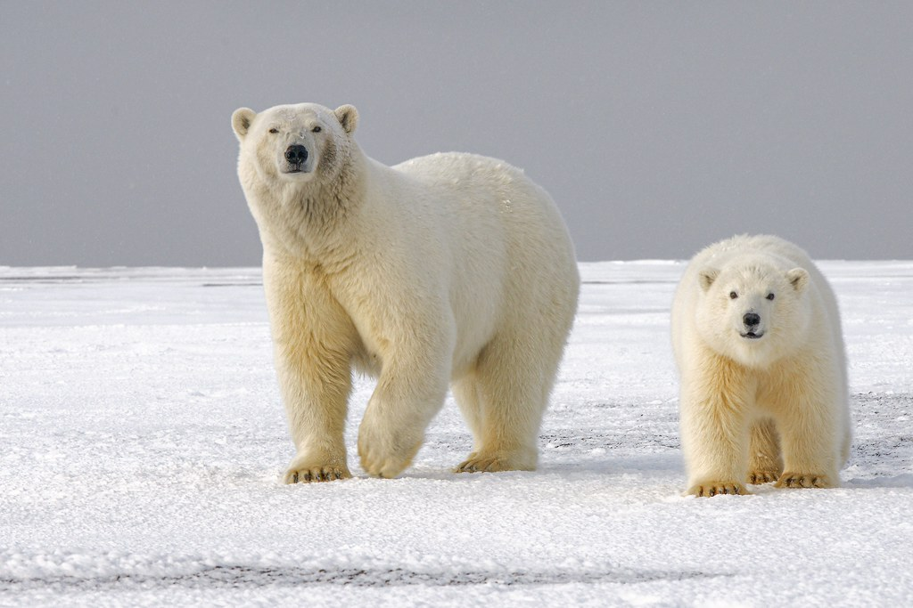
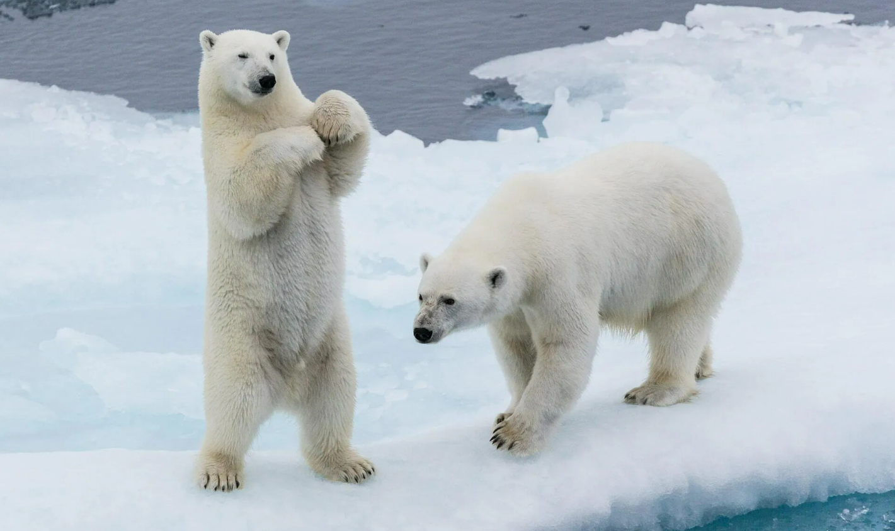
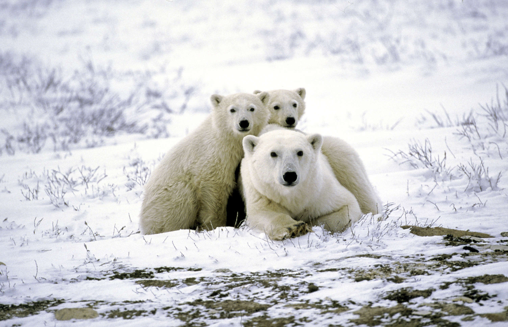
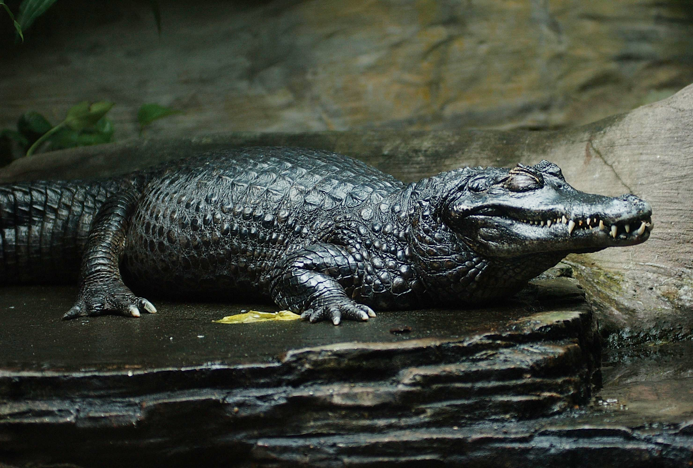

🆔 名字： 北極熊 (Polar Bear)
🏠 住址： 北極寒冷的冰原
🍴 愛吃： 肥美的海豹
🏅 專長： 冰上滑行、游泳健將
● 神奇的白毛
北極熊看起來是白色的，但白毛就像透明的管子隨時隨地幫北極熊收集熱量，讓牠能輕鬆生活在北極寒冷之地。
● 巨大的雪地靴
北極熊的腳掌非常大，腳底還有毛，讓牠在冰上跑步也不會滑倒！
● 偵探小能力
有著靈敏的黑鼻子，在很遠很遠的地方牠都能聞得到你的氣味喔！
● 小小保暖秘訣
別看牠耳朵小小的，那可是為了不讓熱量跑掉，而有著特殊器官喔！
北極熊皮膚是甚麼顏色？
(點一下翻開看答案)✨ 北極熊的皮膚是黑色！
在白毛下面，真實皮膚是黑色，能像發熱衣一樣幫我吸熱喔！穿著兩層保暖大衣就不怕北極寒冷的氣溫喔！
聽說有人叫我「陸地大魚」？
(點一下翻開看答案)✨ 應該是叫「海洋哺乳動物」喔！
我雖然有四隻腳，但我跟鯨魚一樣被歸類為「海洋哺乳動物」，我可以連續游好幾天都不休息！




我的皮膚其實是什麼顏色的，才能吸收陽光保暖？